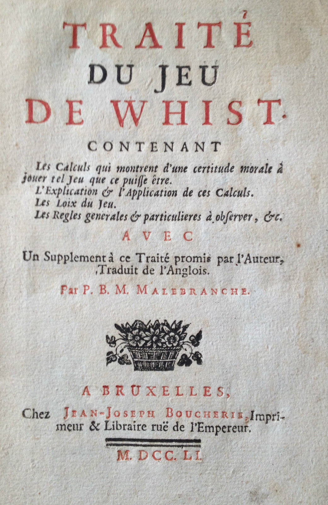

A Descriptive Bibliography of Edmond Hoyle
Copyright © 2014-26 by David Levy
(page updated 2026-03-24)User Guide
Boucherie.Whist.Fr.1751
Traité du Jeu de Whist, Chez Jean-Joseph Boucherie, first edition in French, 1751.
 |
Title: |
TRAITÉ | DU JEU | DE WHIST. | CONTENANT | Les Calculs qui montrent d'une certitude morale à |
jouer tel Jeu que ce puiſſe être. | L'Explication & l'Application de ces
Calculs. | Les Loix du Jeu. | Les Regles generales & particulieres à
obſerver, &c. | AVEC | Un Supplement à ce Traité promis par l'Auteur, | Traduit de
l'Anglois. | Par P. B. M. Malebranche. | [tailpiece] | A BRUXELLES, | Chez Jean-Joseph Boucherie, Impri-|meur & Libraire ruë de l'Empereur. | [short oxford rule] | M. DCC. LI. |
| Collation: |
8o: π6 A–C8 D2 [$½ signed]; 32 leaves, pp. [8 ] [i] ii–iv, [1] 2–50 [2 ] [misprinting 49 as 59] |
| Half Title: |
TRAITÉ | DU JEU | DE WHIST. |
| Contents: |
Signature (Page) Reference |
Contents |
Signature (Page) Reference |
Running Titles |
| π1r |
half title |
|
|
| π1v |
blank |
|
|
| π2r |
title |
|
|
| π2v |
blank |
|
|
| π3r–π4v |
‘[headpiece] | AUX AMATEURS | DU JEU | DE WHIST. |
[...]’ |
|
|
| π5r–π6v (i–iv) |
‘[headpiece] | PREFACE | DU TRADUCTEUR. | [...]’ |
π5v–π6v (ii–iv) |
‘PREFACE.’ |
| A1r–D1v (1–50) |
‘[headpiece] | TRAITÉ | DU JEU | DE WHIST. | [...]’ |
|
|
| D2r |
Errata |
|
|
| D2v |
blank |
|
|
| Publisher: |
Jean-Joseph Boucherie |
| Translator: |
Pierre Balthazar Maximilien Malebranche |
| References: |
Depaulis 81* |
| Other Copies: |
Bodard |
Home